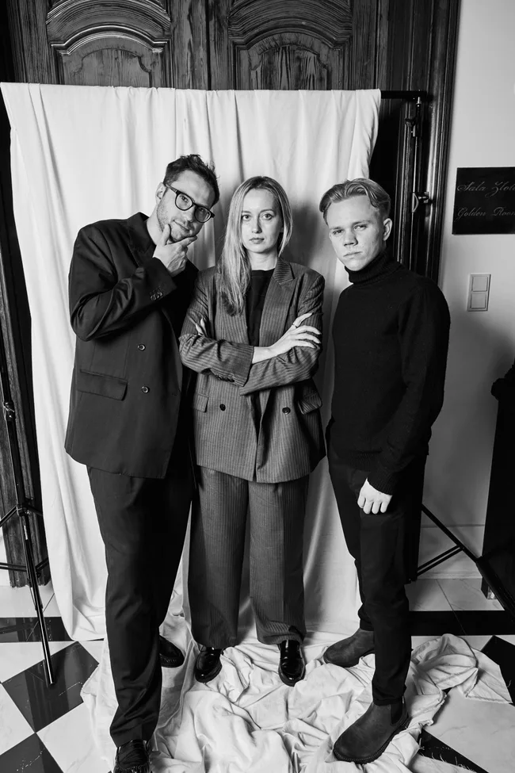
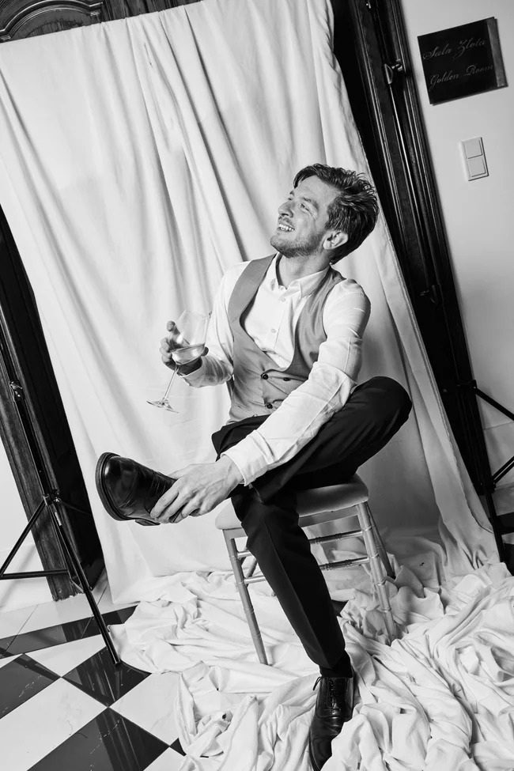

01 / Czyste tło, swobodne portrety
Klasyczna
Czarno-białe portrety na jasnym tle. Goście mogą przychodzić solo, w parach i w większych grupach.
Zobacz Klasyczną →Oferta ślubna
Podajcie kilka szczegółów o weselu. Po wysłaniu formularza porównacie Fotostację Klasyczną i Edytorialną.
Wybierzcie swój styl
01 / Czyste tło, swobodne portrety
Czarno-białe portrety na jasnym tle. Goście mogą przychodzić solo, w parach i w większych grupach.
Zobacz Klasyczną →
02 / Portrety jak z sesji modowej
Drapowana scenografia, wyrazisty błysk i głównie pionowe kadry. Najlepsza solo, w duecie lub w trójkę. Dostępne większe odbitki i cyfrowy kolor w Exclusive.
Zobacz Edytorialną →Sobotki Portraits / 02
Wyraziste światło, drapowana scenografia i pionowe kadry jak z sesji modowej. Najlepiej sprawdzi się w portretach solo oraz w grupach 2–3 osób.
Zobacz pakiety ↓






Cennik
Przed weselem wybieracie jeden format. Na miejscu drukujemy wyłącznie czarno-białe odbitki. Odbitki ponad limit: 1,50 zł/szt., rozliczane z organizatorem po weselu. Dodatkowa godzina: 600 zł. Księga gości do Essential: 600 zł. Transport: 1 zł/km od Gliwic, rozliczany osobno.
* Dostęp na miejscu zależy od internetu w obiekcie.